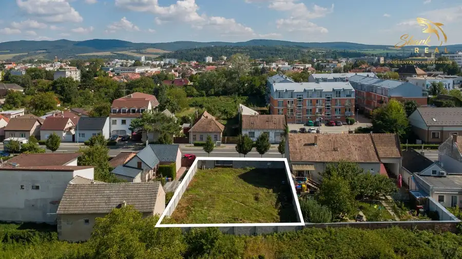
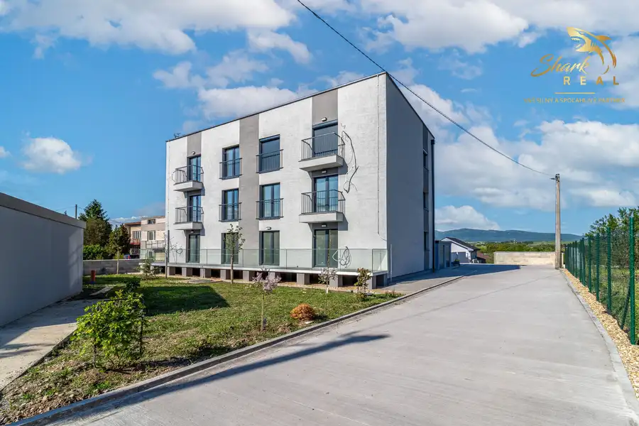
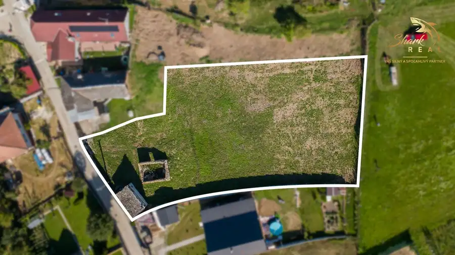

Atraktívny stavebný pozemok pri hlavnej ceste v Piešťanoch
Piešťany
- Plocha234 m²
O nehnuteľnosti
SHARK REAL vám ponúka na predaj stavebný pozemok s výmerou 234 m² v meste Piešťany na Bratislavskej ulici.Tento pozemok predstavuje ideálnu príležitosť pre výstavbu rodinného domu alebo menšieho developerského projektu. Nachádza sa vo výbornej lokalite pri hlavnej ceste, čo zaručuje výbornú dostupnosť do centra mesta, ako aj rýchle napojenie na diaľnicu D1 smerom na Trnavu či Bratislavu.Vhodný pre rodinný dom, polyfunkčnú budovu alebo menšiu bytovku či prevádzku.Hlavné benefity pozemku:• rovinatý pozemok s pravidelným tvarom• všetky inžinierske siete priamo na pozemku (voda, elektrina, kanalizácia, plyn)• atraktívna poloha s dobrou občianskou vybavenosťou v okolí• priamy prístup z asfaltovej komunikácieV blízkosti sa nachádzajú obchody, školy, škôlky, reštaurácie a ďalšia občianska vybavenosť, ktorá zabezpečí pohodlné bývanie. Lokalita zároveň ponúka rýchle spojenie do centra Piešťan aj do okolitých miest.Táto nehnuteľnosť je vhodná pre tých, ktorí hľadajú pozemok v meste s kompletnou infraštruktúrou a dobrou dostupnosťou, pričom si chcú postaviť bývanie podľa vlastných predstáv.Cena: 70 000 €V cene nehnuteľnosti je zahrnuté:- kompletný právny servis spojený s predajom nehnuteľnosti- vyhotovenie rezervačnej, kúpnej zmluvy a návrhu na vklad do katastra nehnuteľností.- uhradenie správneho poplatku za návrh na vklad kúpnej zmluvy do katastra nehnuteľností- uhradenie poplatku za osvedčenie podpisov na kúpnej zmluve- poradenstvo / vybavenie financovania / pomoc pri znaleckom posudkuBližšie informácie, prípadne termín obhliadky Vám rád poskytnem na tel. č. 0903 500 401 alebo prostredníctvom emailu grussmann@sharkreal.skSHARK REAL - VÁŠ SILNÝ A SPOĽAHLIVÝ PARTNER V OBLASTI REALÍT!
Parametre
| Druh | Pozemok pre rodinné domy |
|---|---|
| Dátum zverejnenia | 13. 10. 2025 |
| Elektrina | Na pozemku - 230 V |
| Odpadové vody | Na pozemku - Kanalizácia |
| Plocha pozemku | 234 m² |
| Plyn | Na pozemku |
| Pripravenosť k výstavbe | Schválené v územnom pláne |
| Terén pozemku | Rovinatý |
| Typ | Predaj |
| Voda | Na pozemku - Diaľkový vodovod |
Kde to je


Mohlo by Vás zaujímať

PozemokNové9 140 000 €Atraktívny stavebný pozemok pri hlavnej ceste v Piešťanoch Piešťany 468 m² SHARK REAL vám ponúka na predaj stavebný pozemok s výmerou 468 m² v meste Piešťany na Bratislavskej ulici.Tento pozemok predstavuje ideálnu…
BytNové8 Cena dohodouSpojenie komfortu a pokoja: objavte nové byty v predpredaji Ďurďošík 3-izbový70 m²1. podlažie SHARK REAL vám ponúka predaj nových bytov v atraktívnom rezidenčnom projekte Zelené Terasy Ďurďošík.Túžite po bývaní, ktoré spája výhody mestského…
PozemokNové6 Cena dohodouAtraktívny pozemok na Banke pri Piešťanoch Banka 1623 m² SHARK REAL vám ponúka na predaj priestranný stavebný pozemok vo vyhľadávanej a pokojnej lokalite kúpeľného mesta Piešťany – obec Banka. Táto…